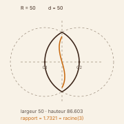
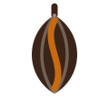
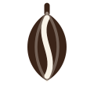
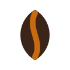
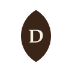
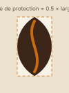
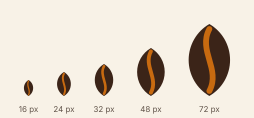
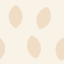
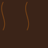

01
La marque
Le cacao de la Sanaga-Maritime, tracé du plant au port.
Dibamba est le nom d'une rivière qui traverse les plantations avant de rejoindre l'estuaire. Court, prononçable à l'export, et déjà porteur du territoire.
Le cacao camerounais se vend en vrac et sans nom. La coopérative veut vendre en origine identifiée : même fève, mais nommée, tracée et reconnaissable. C'est un problème de marque avant d'être un problème d'agriculture.
La règle qui tranche. Est-ce que ce choix survit à un sac de jute imprimé en deux encres ? Le sac est le support le plus contraignant de la chaîne. Ce qui ne passe pas là ne passe nulle part — le système est donc conçu depuis cette contrainte, puis enrichi.
02
La construction du symbole
Le symbole n'est pas dessiné, il est construit. Deux cercles de même rayon, dont les centres sont écartés d'une distance connue, se coupent en formant la cabosse. Le méandre qui la traverse est la rivière qui donne son nom à la marque.
Le rapport hauteur/largeur du fruit — racine de 3 — n'est pas un réglage fait à l'œil : c'est une conséquence de la géométrie. Changer le rayon régénère les treize variantes, toutes cohérentes entre elles.

03
Les variantes du symbole
Cinq traitements, choisis selon le fond et le procédé d'impression.

Usage courant, fond clair

Une encre, tampon
Fond sombre
Télécopie, gravure

Sous 24 px : sans nervures

Cachet, marquage
04
Le logotype
Trois dispositions. L'horizontale est la référence ; la verticale sert aux formats étroits ; la version avec signature s'emploie en première rencontre, quand le lecteur ne connaît pas encore la marque.
Une limite assumée. Le mot est composé avec une police système
et sa largeur est imposée par l'attribut textLength, pour que
l'encombrement ne dépende pas de la machine. Un livrable de production
remplacerait ce texte par des tracés vectorisés.
05
Zone de protection et tailles minimales
Aucun élément — texte, filet, bord de page — n'entre dans la zone de protection. Elle vaut la moitié de la largeur de la cabosse, sur les quatre côtés.


| Support | Taille minimale | Variante |
|---|---|---|
| Icône d'interface | 16 px de haut | Simplifiée |
| Écran | 24 px de haut | Simplifiée |
| Impression | 12 mm de large | Complète |
| Sac de jute | 150 mm de haut | Complète, deux encres |
06
Ce qu'on ne fait pas
On garde
- La cabosse, seul objet que tout le monde associe au cacao sans légende.
- Le méandre, qui nomme le territoire précis.
- Le brun et l'ocre : la fève fermentée et la cabosse mûre.
On refuse
- Le motif « africain » générique — kente, bogolan, wax. Aucun n'appartient à la Sanaga-Maritime.
- La silhouette du continent : elle dit « quelque part en Afrique », le contraire d'une origine.
- Les couleurs panafricaines : elles renvoient à un drapeau, pas à un cacao.
- Dégradés et reliefs : ils ne survivent ni au jute ni à la gravure.
07
Les couleurs
Chaque couleur est nommée par son rôle, jamais par sa teinte. C'est ce qui permet de la remplacer sans que le système mente.
Contraste des paires employées
Le tableau ci-dessous n'est pas écrit à la main : il est recalculé au chargement, avec la formule de la norme WCAG 2.1. C'est ce qui le rend impossible à laisser mentir.
| Paire | Usage | Ratio | Seuil | Verdict |
|---|
Deux valeurs pour un seul accent, et c'est volontaire.
cabosse tient 3,4:1 sur le crème — assez pour une grande forme,
pas pour du texte. Plutôt qu'assombrir tout l'accent et éteindre la marque,
on sépare l'usage graphique de l'usage textuel, et chacun est vérifié contre
son propre seuil.
08
La typographie
L'échelle suit une quinte juste, de rapport 1,5 : assez contrastée pour hiérarchiser un emballage lu à distance variable.
09
Les pictogrammes
Douze pictogrammes, grille 24 × 24, trait de 2, en currentColor :
ils prennent la couleur de leur texte, donc ils héritent d'un contraste déjà
vérifié. Chacun porte le nom de son usage dans la filière,
jamais celui de sa forme — fermentation et non caisse.
10
Les motifs
Les motifs dérivent de la géométrie du logo — même cabosse, même méandre. C'est ce qui fait qu'un papier d'emballage se reconnaît sans que le logo y figure.


11
Les applications
Six supports, aux dimensions physiques réelles. Le sac de jute vient en premier parce qu'il est le plus contraignant.